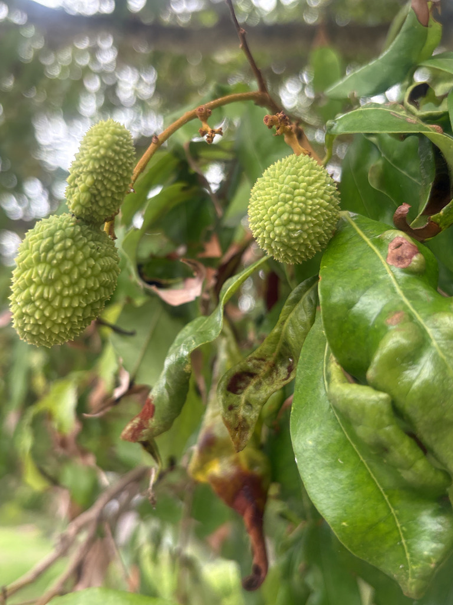

- Lychee was domesticated not once but twice — independently in two separate regions of ancient China, Yunnan and Hainan — a discovery made through genomic analysis published in Nature Genetics in 2022.
- The Tang Dynasty emperor Xuanzong famously organized a horse-relay courier system to rush fresh lychees hundreds of miles to the imperial court — the fruit was that perishable, and that prized.
- New lychee leaves flush bronze-red before hardening to deep glossy green, giving the tree a brief, striking two-tone look each spring.
- Lychee arrived in Florida from India sometime between 1870 and 1880, but the first fruits here are said to have ripened only in 1916 — the tree takes its time.
Lychee is native to the low-elevation subtropical forests of southern China and possibly northern Vietnam, where wild populations still grow in the rainforests and hill country of Yunnan, Hainan, and neighboring provinces. Recorded cultivation in China stretches back more than 2,100 years.
It reached Florida from India between 1870 and 1880, though the first fruits here are said to have ripened only in 1916. The tree attracted little commercial attention until the 1940s, when Florida growers began actively promoting it as a dooryard and orchard crop.
Today Florida is the leading lychee-producing state in the continental U.S., with the Sarasota region among the areas where old seed-grown trees — some planted in the 1940s and 1950s — still stand and fruit.
- Few fruits carry as much cultural freight as the lychee. Its recorded history in China spans more than two millennia, and genomic research has confirmed something remarkable: the tree was independently domesticated in two separate regions of ancient China — a finding that underscores just how deeply different communities valued it long before they were in contact with each other.
- Lychee belongs to the Sapindaceae family — the soapberry family — alongside two of its closest relatives: longan (Dimocarpus longan) and rambutan (Nephelium lappaceum). All three share the same essential architecture: fragrant white flesh wrapped around a single large seed.
- Peel them side by side and the family resemblance is unmistakable, even though their outsides — bumpy and red, hairy and scarlet, tan and papery — could hardly look more different.
- In Florida, the lychee is a subtropical tree that needs a genuine seasonal rhythm to perform well: a cool, dry fall and winter to trigger flowering, followed by warmth and moisture through fruit development. That requirement — chilling without freezing — keeps the tree happiest in central and southern Florida, USDA zones 10A through 11.
- The wood is notably dense, and established trees are reasonably wind-resistant.
Lychee flowers are hermaphroditic but self-sterile, meaning the tree depends entirely on outside pollinators to set fruit. The spring flower panicles — drooping clusters up to two and a half feet long — are a meaningful nectar source for bees and various fly species, which are its primary pollinators in Florida.
As a non-native tree with no long evolutionary history with Florida's fauna, lychee does not serve as a larval host for local butterflies or moths. Its wildlife value lies mainly in its pollinator support during bloom and in the fruit clusters, which can attract birds when ripe.
Small greenish-white to yellow flowers appear in early spring on drooping panicles one to two and a half feet long. The flowers are hermaphroditic but self-sterile, so cross-pollination by bees and flies is essential for fruit set.
Clusters of roughly 1.5-inch-diameter drupes ripen in late June and July. Skin is warty and turns bright strawberry-red when ripe, becoming brittle. Inside, sweet white flesh surrounds a single large glossy brown seed.
Pinnately compound, with three to four pairs of leaflets that are dark, glossy green at maturity. New growth flushes a distinctive bronze-red before hardening. The dense, rounded canopy is evergreen.
In commercial and home settings, lychee is most reliably propagated by air layering (marcottage), which preserves the fruiting characteristics of the parent tree. Container-grown plants are the easiest way to establish a new tree. Lychees do not grow true from seed, though some older Florida trees were grown from seed with good results.
In spring, look for the drooping flower panicles emerging at branch tips — long, airy clusters of small pale flowers that attract a steady buzz of bees. In summer (late June through July), watch for the hanging fruit clusters: warty, bright red spheres about the size of a large grape, turning brittle when fully ripe.
Year-round, notice the deep glossy green canopy and its compact, rounded crown — and watch in spring for the brief bronze-red flush as new leaves push out before hardening to green.
The skin and seeds are where the caution lies. Lychee seeds contain methylene cyclopropyl glycine (MCPG), a compound linked to dangerous drops in blood sugar — a risk that is well-documented in malnourished children who ate large quantities of unripe fruit on an empty stomach. Ripe lychee flesh is a safe and widely enjoyed food for healthy adults; simply discard the skin and seed.
Keep seeds away from dogs, as the same compounds are potentially harmful to them, and the large seed is a choking and obstruction hazard.
Florida is the leading lychee-producing state in the continental United States. The delicate, perishable fruit is difficult to ship long distances, which makes locally grown Florida lychee especially prized at summer farmers markets.
The oldest known lychee tree, located in Fujian, China, is reported to be over 1,250 years old and still bearing fruit — a testament to how long-lived a well-sited lychee can be.


- © Maria Escobar (CC-BY-NC), via iNaturalist
- © Denise Sosa (CC-BY-NC), via iNaturalist
- © Hailee Alenduff (CC-BY-NC), via iNaturalist
- © Ruby Meador (CC-BY-NC), via iNaturalist